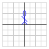
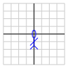
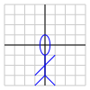
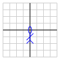
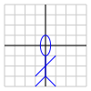

Section 2.6 The geometry of matrix transformations
¶Matrix transformations, which we explored in the last section, allow us to describe certain functions \(T:\real^n\to\real^m\text{.}\) In this section, we will demonstrate how matrix transformations provide a convenient way to describe geometric operations, such as rotations, reflections, and scalings. We will then explore how matrix transformations are used in computer animation.
Preview Activity 2.6.1.
Suppose that we wish to describe the geometric operation that reflects 2-dimensional vectors in the horiztonal axis. For instance, Figure 2.6.1 illustrates how a vector \(\xvec\) is reflected into the vector \(T(\xvec)\text{.}\)
If \(\xvec = \twovec{2}{4}\text{,}\) what is the vector \(T(\xvec)\text{?}\) Sketch the vectors \(\xvec\) and \(T(\xvec)\text{.}\)
More generally, if \(\xvec=\twovec{x}{y}\text{,}\) what is \(T(\xvec)\text{?}\)
Find the vectors \(T\left(\twovec{1}{0}\right)\) and \(T\left(\twovec{0}{1}\right)\text{.}\)
Use your results to write the matrix \(A\) so that \(T(\xvec) = A\xvec\text{.}\) Then verify that \(T\left(\twovec{x}{y}\right)\) agrees with what you found in part b.
Describe the transformation that results from composing \(T\) with itself; that is, what is the transformation \(T\circ T\text{?}\) Explain how matrix multiplication can be used to justify your response.
Subsection 2.6.1 The geometry of \(2\times2\) matrix transformations
The preview activity demonstrates how the matrix \(\left[\begin{array}{rr} 1 \amp 0 \\ 0 \amp -1 \\ \end{array}\right]\) defines a matrix transformation that has the effect of reflecting 2-dimensional vectors in the horizontal axis. The following activity shows, more generally, that matrix transformations can perform a variety of important geometric operations.
Activity 2.6.2.
The diagram below demonstrates the effect of a matrix transformation on the plane. You may modify the matrix \(A\) defining the matrix transformation \(T\) through the sliders at the top. You may also move the red vector \({\mathbf x}\) on the left, by clicking in the head of the vector, and observe \(T({\mathbf x})\) on the right.
For the following matrices \(A\) given below, use the diagram to study the effect of the corresponding matrix transformation \(T(\xvec) = A\xvec\text{.}\) For each transformation, describe the geometric effect of the transformation on the plane.
The matrix \(A=\left[\begin{array}{rr} 2 \amp 0 \\ 0 \amp 1 \\ \end{array}\right]\text{.}\)
The matrix \(A=\left[\begin{array}{rr} 2 \amp 0 \\ 0 \amp 2 \\ \end{array}\right]\text{.}\)
The matrix \(A=\left[\begin{array}{rr} 0 \amp -1 \\ 1 \amp 0 \\ \end{array}\right]\text{.}\)
The matrix \(A=\left[\begin{array}{rr} 1 \amp 1 \\ 0 \amp 1 \\ \end{array}\right]\text{.}\)
The matrix \(A=\left[\begin{array}{rr} -1 \amp 0 \\ 0 \amp 1 \\ \end{array}\right]\text{.}\)
The matrix \(A=\left[\begin{array}{rr} 1 \amp 0 \\ 0 \amp 0 \\ \end{array}\right]\text{.}\)
The matrix \(A=\left[\begin{array}{rr} 1 \amp 0 \\ 0 \amp 1 \\ \end{array}\right]\text{.}\)
The matrix \(A=\left[\begin{array}{rr} 1 \amp -1 \\ -2 \amp 2 \\ \end{array}\right]\text{.}\)
The previous activity presented some examples in which matrix transformations perform interesting geometric actions, such as rotations, scalings, and reflections. Let's turn this question around: Suppose we have a specific geometric action that we would like to perform. Can we find a matrix \(A\) that represents this action through the matrix transformation \(T(\xvec) = A\xvec\text{?}\)
The linearity of matrix-vector multiplication Proposition 2.2.3 provides the key to answering this question. Remember that if \(A\) is a matrix, \(\vvec\) and \(\wvec\) vectors, and \(c\) a scalar, then
This means that a matrix transformation \(T(\xvec) = A\xvec\) satisfies the corresponding linearity property: Linearity of Matrix Transformations.
It turns out that, if \(T:\real^n\to\real^m\) satisfies these two linearity properties, then we can find a matrix \(A\) such that \(T(\xvec) = A\xvec\text{.}\) In fact, Proposition 2.5.4 tells us how to form \(A\text{;}\) we simply write
We will now check that \(T(\xvec) = A\xvec\) using the linearity of \(T\text{:}\)
The result is the following proposition.
Proposition 2.6.2.
The function \(T:\real^n\to\real^m\) is a matrix transformation where \(T(\xvec) = A\xvec\) for some \(m\times n\) matrix \(A\) if and only if
In this case, \(A\) is the matrix whose columns are \(T(\evec_j)\text{;}\) that is,
We will put this proposition to use in the following example by finding the matrix whose matrix transformation performs a specific geometric operation.
Example 2.6.3.
In this example, we will find the matrix defining a matrix transformation that performs a \(45^\circ\) counterclockwise rotation.
We first need to know that this geometric operation can be represented by a matrix transformation. To begin, we will define the function \(T:\real^2\to\real^2\) where \(T(\xvec)\) is obtained by rotating \(\xvec\) counterclockwise by \(45^\circ\text{,}\) as shown in Figure 2.6.4.

We need to check that \(T\) is a matrix transformation; by Proposition 2.6.2, this means that we should make sure that
The next two figures illustrate these properties. For instance, Figure 2.6.5 shows that relationship between \(T(\vvec)\) and \(T(c\vvec)\) when \(c\) is a scalar. We easily see that \(T(c\vvec)\) is a scalar multiple of \(T(\vvec)\) and hence that \(T(c\vvec) = cT(\vvec)\text{.}\)
Similarly, Figure 2.6.6 shows the relationship between \(T(\vvec+\wvec)\text{,}\) \(T(\vvec)\text{,}\) and \(T(\wvec)\text{.}\) In this way, we see that \(T(\vvec+\wvec) = T(\vvec) + T(\wvec)\text{.}\)
This shows that the function \(T\text{,}\) which rotates vectors by \(45^\circ\) is a matrix transformation. We may therefore write it as \(T(\xvec) = A\xvec\) where \(A\) is the \(2\times2\) matrix \(A=\left[\begin{array}{rr} T(\evec_1) \amp T(\evec_2) \end{array}\right]\text{.}\) The columns of this matrix, \(T(\evec_1)\) and \(T(\evec_2)\text{,}\) are shown in Figure 2.6.7.
To find the components of these vectors, notice that they form an isosceles right triangle, as shown in Figure 2.6.8. Since the length of \(\evec_1\) is 1, the length of \(T(\evec_1)\text{,}\) the hypotenuse of the triangle, is 1.

This leads to
Hence, the matrix \(A\) is
You may wish to check this using the interactive diagram in the previous activity using the approximation \(1/\sqrt{2} \approx 0.7\text{.}\)
In this example, we found that the desired geometric operation, a rotation in the plane, was in fact a matrix transformation \(T\) by checking that
In general, the same kind of thinking applies to show that rotations, reflections, and scalings are matrix transformations so we will not bother with that step in the future.
Activity 2.6.3.
In this activity, we seek to describe various matrix transformations by finding the matrix that gives the desired transformation. All of the transformations that we study here have the form \(T:\real^2\to\real^2\text{.}\)
Find the matrix of the transformation that has no effect on vectors; that is, \(T(\xvec) = \xvec\text{.}\) We call this matrix the identity and denote it by \(I\text{.}\)
Find the matrix of the transformation that reflects vectors in \(\real^2\) over the line \(y=x\text{.}\)
What is the result of composing the reflection you found in the previous part with itself; that is, what is the effect of reflecting in the line \(y=x\) and then reflecting in this line again. Provide a geometric explanation for your result as well as an algebraic one obtained by multiplying matrices.
Find the matrix that rotates vectors counterclockwise in the plane by \(90^\circ\text{.}\)
Compare the result of rotating by \(90^\circ\) and then reflecting in the line \(y=x\) to the result of first reflecting in \(y=x\) and then rotating \(90^\circ\text{.}\)
Find the matrix that results from composing a \(90^\circ\) rotation with itself. Explain the geometric meaning of this operation.
Find the matrix that results from composing a \(90^\circ\) rotation with itself four times; that is, if \(T\) is the matrix transformation that rotates vectors by \(90^\circ\text{,}\) find the matrix for \(T\circ T\circ T \circ T\text{.}\) Explain why your result makes sense geometrically.
-
Explain why the matrix that rotates vectors counterclockwise by an angle \(\theta\) is
\begin{equation*} \left[\begin{array}{rr} \cos\theta \amp -\sin\theta \\ \sin\theta \amp \cos\theta \\ \end{array}\right]\text{.} \end{equation*}
In the first part of this activity, we encountered the identity matrix, which, as an \(n\times n\) matrix, has the form
The matrix transformation \(T(\xvec) = I\xvec\) leaves vectors unchanged; that is, \(T(\xvec) = \xvec\) so that \(I\xvec = \xvec\text{.}\) Notice that the columns of \(I\) are simply the vectors \(\evec_j\text{.}\)
Subsection 2.6.2 Matrix transformations and computer animation
Linear algebra plays a significant role in computer animation. We will now illustrate how matrix transformations and some of the ideas we have developed in this section are used by computer animators to create the illusion of motion in their characters.
Figure 2.6.9 shows a test character used by Pixar animators. On the left is the original definition of the character; on the right, we see that the character has been moved into a different pose. To make it appear that the character is moving, animators create a sequence of frames in which the character's pose is modified slightly from one frame to the next. Matrix transformations play an important role in doing this.

For instance, Figure 2.6.10 shows the character Remy from Pixar's Ratatouille. Clearly, a lot goes into transforming the model on the left into the engaging character on the right, such as the addition of fur and eyes. We will focus only on the motion of the character.
Of course, realistic characters will be drawn in three-dimensions. To keep things a little more simple, however, we will look at this two-dimensional character and devise matrix transformations that move them into different poses.

Of course, the first thing we may wish to do is simply move them to a different position in the plane, such as that shown in Figure 2.6.11. Motions like this are called translations.
This presents a problem because a matrix transformation \(T:\real^2\to\real^2\) has the property that \(T(\zerovec) = \zerovec\text{.}\) This means that a matrix transformation cannot move the origin of the coordinate plane. To address this restriction, animators use homogeneous coordinates, which are formed by placing the two-dimensional coordinate plane inside \(\real^3\) as the plane \(z=1\text{.}\) This is shown in Figure 2.6.12.

Therefore, rather than describing points in the plane as vectors \(\twovec{x}{y}\text{,}\) we describe them as three-dimensional vectors \(\threevec{x}{y}{1}\text{.}\) As we see in the next activity, this allows us to translate our character in the plane.
Activity 2.6.4.
In this activity, we will use homogeneous coordinates and matrix transformations to move our character into a variety of poses.
-
Since we regard our character as living in \(\real^3\text{,}\) we will consider matrix transformations defined by matrices
\begin{equation*} \left[\begin{array}{rrr} a \amp b \amp c \\ d \amp e \amp f \\ 0 \amp 0 \amp 1 \\ \end{array}\right]\text{.} \end{equation*}Verify that such a matrix transformation transforms points in the plane \(z=1\) into other points in this plane; that is, verify that
\begin{equation*} \left[\begin{array}{rrr} a \amp b \amp c \\ d \amp e \amp f \\ 0 \amp 0 \amp 1 \\ \end{array}\right] \threevec{x}{y}{1} = \threevec{x'}{y'}{1}\text{.} \end{equation*}Express the coordinates of the resulting point \(x'\) and \(y'\) in terms of the coordinates of the original point \(x\) and \(y\text{.}\)
The diagram below allows you to create matrix transformations of this form to move our character into different poses. You may use it to help address the following questions. -
Find the matrix transformation that translates our character to a new position in the plane, as shown in Figure 2.6.13

Figure 2.6.13. Translating to a new position. -
As originally drawn, our character is waving with one of their hands. In one of the movie's scenes, we would like her to wave with their other hand, as shown in Figure 2.6.14. Find the matrix transformation that moves them into this pose.
Figure 2.6.14. Waving with the other hand. -
Later, our chracter performs a cartwheel by moving through the sequence of poses shown in Figure 2.6.15. Find the matrix transformations that create these poses.


Figure 2.6.15. Performing a cartwheel. -
Next, we would like to find the transformations that zoom in on our character's face, as shown in Figure 2.6.16. To do this, you should think about composing matrix transformations. This can be accomplished in the diagram by using the Compose button, which makes the current pose, displayed on the right, the new beginning pose, displayed on the left. What is the matrix transformation that moves the character from the original pose, shown in the upper left, to the final pose, shown in the lower right?
 
Figure 2.6.16. Zooming in on our characters' face. -
We would also like to create our character's shadow, shown in the sequence of poses in Figure 2.6.17. Find the sequence of matrix transformations that achieves this. In particular, find the matrix transformation that take our character from their original pose to their shadow in the lower right.


Figure 2.6.17. Casting a shadow. Write a final scene to the movie and describe how to construct a sequence of matrix transformations that create your scene.
Subsection 2.6.3 Summary
This section explored how geometric operations, such as rotations, reflections, and scalings, are performed by matrix transformations.
A matrix of the form \(\left[\begin{array}{rr} a \amp 0 \\ 0 \amp b \\ \end{array}\right]\) represents a horizontal scaling by a factor \(a\) and a vertical scaling by \(b\text{.}\)
A matrix of the form \(\left[\begin{array}{rr} \cos\theta \amp -\sin\theta \\ \sin\theta \amp \cos\theta \\ \end{array}\right]\) defines a rotation by an angle \(\theta\text{.}\)
Composing geometric operations corresponds to matrix multiplication.
Computer animators use matrix transformations to create the illusion of motion. Homogeneous coordinates are used so that translations can be realized as matrix transformations.
Exercises 2.6.4 Exercises
1.
For each of the following geometric operations in the plane, find a \(2\times 2\) matrix that defines the matrix transformation performing the operation.
Rotates vectors by \(180^\circ\text{.}\)
Reflects vectors in the vertical axis.
Reflects vectors in the line \(y=-x\text{.}\)
Rotates vectors counterclockwise by \(60^\circ\text{.}\)
First rotates vectors counterclockwise by \(60^\circ\) and then reflects in the line \(y=x\text{.}\)
2.
This exercise investigates the composition of reflections in the plane.
Find the result of first reflecting in the line \(y=0\) and then \(y=x\text{.}\) What familiar operation is the cumulative effect of this composition?
What happens if you compose the operations in the opposite order; that is, what happens if you first reflect in \(y=x\) and then \(y=0\text{?}\) What familiar operation results?
What familiar geometric operation results if you first reflect in the line \(y=x\) and then \(y=-x\text{?}\)
What familiar geometric operation results if you first rotate by \(90^\circ\) and then reflect in the line \(y=x\text{?}\)
It is a general fact that the composition of two reflections results in a rotation through twice the angle from the first line of reflection to the second. We will investigate this more generally in Exercise 2.6.4.8
3.
Shown below in Figure 2.6.18 are the vectors \(\evec_1\text{,}\) \(\evec_2\text{,}\) and \(\evec_3\) in \(\real^3\text{.}\)
Imagine that the thumb of your right hand points in the direction of \(\evec_1\text{.}\) A positive rotation about the \(x\) axis corresponds to a rotation in the direction in which your fingers point. Find the matrix definining the matrix transformation \(T\) that rotates vectors by \(90^\circ\) around the \(x\)-axis.
In the same way, find the matrix that rotates vectors by \(90^\circ\) around the \(y\)-axis.
- Find the matrix that rotates vectors by \(90^\circ\) around the \(z\)-axis.
What is the cumulative effect of rotating by \(90^\circ\) about the \(x\)-axis, followed by a \(90^\circ\) rotation about the \(y\)-axis, followed by a \(-90^\circ\) rotation about the \(x\)-axis.
4.
We have seen how a matrix transformation can perform a geometric operation; now we would like to find a matrix transformation that undoes that operation.
-
Suppose that \(T:\real^2\to\real^2\) is the matrix transformation that rotates vectors by \(90^\circ\text{.}\) Find a matrix transformation \(S:\real^2\to\real^2\) that undoes the rotation; that is, \(S\) takes \(T(\xvec)\) back into \(\xvec\) so that \(S\circ T(\xvec) = \xvec\text{.}\) Think geometrically about what the transformation \(S\) should be and then verify it algebraically.
We say that \(S\) is the inverse of \(T\) and we will write it as \(T^{-1}\text{.}\)
Verify algebraically that the reflection \(R:\real^2\to\real^2\) across the line \(y=x\) is its own inverse; that is, \(R^{-1} = R\text{.}\)
-
The matrix transformation \(T:\real^2\to\real^2\) defined by the matrix
\begin{equation*} A= \left[\begin{array}{rr} 1\amp 1 \\ 0 \amp 1\\ \end{array}\right] \end{equation*}is called a shear. Find the inverse of \(T\text{.}\)
-
Describe the geometric effect of the matrix transformation defined by
\begin{equation*} A=\left[\begin{array}{rr} \frac12 \amp 0 \\ 0 \amp 3\\ \end{array}\right] \end{equation*}and then find its inverse.
5.
We have seen that the matrix
performs a rotation through an angle \(\theta\) about the origin. Suppose instead that we would like to rotate by \(90^\circ\) about the point \((1,2)\text{.}\) Using homogeneous coordinates, we will develop a matrix that performs this operation.
Our strategy is to
begin with a vector whose tail is at the point \((1,2)\text{,}\)
translate the vector so that its tail is at the origin,
rotate by \(90^\circ\text{,}\) and
translate the vector so that its tail is back at \((1,2)\text{.}\)
This is shown in Figure 2.6.19.

Remember that, when working with homogeneous coordinates, we consider matrices of the form
The first operation is a translation by \((-1,-2)\text{.}\) Find the matrix that performs this translation.
The second operation is a \(90^\circ\) rotation about the origin. Find the matrix that performs this rotation.
The third operation is a translation by \((1,2)\text{.}\) Find the matrix that performs this translation.
Use these matrices to find the matrix that performs a \(90^\circ\) rotation about \((1,2)\text{.}\)
Use your matrix to determine where the point \((-10, 5)\) ends up if rotated by \(90^\circ\) about the \((1,2)\text{.}\)
6.
This exercise concerns matrix transformations called projections.
-
Consider the matrix transformation \(T:\real^2\to\real^2\) that assigns to a vector \(\xvec\) the closest vector on horizontal axis as illustrated in Figure 2.6.20. This transformation is called the projection onto the horizontal axis. You may imagine \(T(\xvec)\) as the shadow cast by \(\xvec\) from a flashlight far up on the positive \(y\)-axis.
Figure 2.6.20. Projection onto the \(x\)-axis. Find the matrix that defines this matrix transformation \(T\text{.}\)
Find the matrix that defines projection on the vertical axis.
What is the result of composing the projection onto the horizontal axis with the projection onto the vertical axis?
Find the matrix that defines projection onto the line \(y=x\text{.}\)
7.
This exericse concerns the matrix transformations defined by matrices of the form
Let's begin by looking at two special types of these matrices.
-
First, consider the matrix where \(a = 2\) and \(b=0\) so that
\begin{equation*} A = \left[\begin{array}{rr} 2 \amp 0 \\ 0 \amp 2 \\ \end{array}\right]\text{.} \end{equation*}Describe the geometric effect of this matrix. More generally, suppose we have
\begin{equation*} A = \left[\begin{array}{rr} r \amp 0 \\ 0 \amp r \\ \end{array}\right]\text{,} \end{equation*}where \(r\) is a positive number. What is the geometric effort of \(A\) on vectors in the plane?
-
Suppose now that \(a = 0\) and \(b = 1\) so that
\begin{equation*} A = \left[\begin{array}{rr} 0 \amp -1 \\ 1 \amp 0 \\ \end{array}\right]\text{.} \end{equation*}What is the geometric effect of \(A\) on vectors in the plane? More generally, suppose we have
\begin{equation*} A = \left[\begin{array}{rr} \cos\theta \amp -\sin\theta \\ \sin\theta \amp \cos\theta \\ \end{array}\right]\text{.} \end{equation*}What is the geometric effect of \(A\) on vectors in the plane?
-
In general, the composition of matrix transformation depends on the order in which we compose them. For these transformations, however, it is not the case. Check this by verifying that
\begin{equation*} \left[\begin{array}{rr} r \amp 0 \\ 0 \amp r \\ \end{array}\right] \left[\begin{array}{rr} \cos\theta \amp -\sin\theta \\ \sin\theta \amp \cos\theta \\ \end{array}\right] = \left[\begin{array}{rr} \cos\theta \amp -\sin\theta \\ \sin\theta \amp \cos\theta \\ \end{array}\right] \left[\begin{array}{rr} r \amp 0 \\ 0 \amp r \\ \end{array}\right]\text{.} \end{equation*} -
Let's now look at the general case where
\begin{equation*} A = \left[\begin{array}{rr} a \amp -b \\ b \amp a \\ \end{array}\right]\text{.} \end{equation*}We will draw the vector \(\twovec{a}{b}\) in the plane and express it using polar coordinates \(r\) and \(\theta\) as shown in Figure 2.6.21.

Figure 2.6.21. A vector may be expressed in polar coordinates. We then have
\begin{equation*} \twovec{a}{b} = \twovec{r\cos\theta}{r\sin\theta}\text{.} \end{equation*}Show that the matrix
\begin{equation*} \left[\begin{array}{rr} a \amp -b \\ b \amp a \\ \end{array}\right] = \left[\begin{array}{rr} r \amp 0 \\ 0 \amp r \\ \end{array}\right] \left[\begin{array}{rr} \cos\theta \amp -\sin\theta \\ \sin\theta \amp \cos\theta \\ \end{array}\right]\text{.} \end{equation*} -
Using this description, describe the geometric effect on vectors in the plane of the matrix transformation defined by
\begin{equation*} A= \left[\begin{array}{rr} a \amp -b \\ b \amp a \\ \end{array}\right]\text{.} \end{equation*} -
Suppose we have a matrix transformation \(T\) defined by a matrix \(A\) and another transformation \(S\) defined by \(B\) where
\begin{equation*} A= \left[\begin{array}{rr} a \amp -b \\ b \amp a \\ \end{array}\right], B= \left[\begin{array}{rr} c \amp -d \\ d \amp c \\ \end{array}\right]\text{.} \end{equation*}Describe the geometric effect of the composition \(S\circ T\) in terms of the \(a\text{,}\) \(b\text{,}\) \(c\text{,}\) and \(d\text{.}\)
The matrices of this form give a model for the complex numbers and will play an important role in Section 4.4.
8.
We saw earlier that the rotation in the plane through an angle \(\theta\) is given by the matrix:
We would like to find a similar expression for the matrix that represents the reflection in \(L_\theta\text{,}\) the line passing through the origin and making an angle of \(\theta\) with the positive \(x\)-axis, as shown in Figure 2.6.22.
-
To do this, notice that this reflection can be obtained by composing three separate transformations as shown in Figure 2.6.23. Beginning with the vector \(\xvec\text{,}\) we apply the transformation \(R\) to rotate by \(-\theta\) and obtain \(R(\xvec)\text{.}\) Next, we apply \(S\text{,}\) a reflection in the horizontal axis, followed by \(T\text{,}\) a rotation by \(\theta\text{.}\) We see that \(T(S(R(\xvec)))\) is the same as the reflection of \(\xvec\) in the original line \(L_\theta\text{.}\)

Figure 2.6.23. Reflection in the line \(L_\theta\) as a composition of three transformations. Using this decomposition, show that the reflection in the line \(L_\theta\) is described by the matrix
\begin{equation*} \left[\begin{array}{rr} \cos(2\theta) \amp \sin(2\theta) \\ \sin(2\theta) \amp -\cos(2\theta) \\ \end{array}\right]\text{.} \end{equation*}You will need to remember the trigonometric identities:
\begin{equation*} \begin{aligned} \cos(2\theta) \amp {}={} \cos^2\theta - \sin^2\theta \\ \sin(2\theta) \amp {}={} 2\sin\theta\cos\theta \\ \end{aligned}\text{.} \end{equation*} Now that we have a matrix that describes the reflection in the line \(L_\theta\text{,}\) show that the composition of the reflection in the horizontal axis followed by the reflection in \(L_\theta\) is a counterclockwise rotation by an angle \(2\theta\text{.}\) We saw some examples of this earlier in Exercise 2.6.4.2.